#1 Dengue crisis: Next 7 days challenging | Dhaka Tribune
Dr Sania Tahmina, director at the Institute of Epidemiology, Disease Control and Research (IEDCR) said this at a press briefing
The government has declared the next seven days “challenging,” in combating the dengue crisis in Bangladesh. Dr Sania Tahmina, director at the Institute of Epidemiology, Disease Control and Research (IEDCR) at a press briefing said, the weather is not favourable right now making the next seven days challenging. "If we cannot attack the Aedes breeding grounds, it will become difficult to say where the situation will lead to," she added. Meanwhile, Prof Abul Kalam Azad, director general at Directorate General of Health Services (DGHS) said it will take a couple of weeks to understand where the dengue situation will head to. He suggested people to materialize all the ways to keep people safe from Aedes mosquitoes. Along with wearing full-sleeved clothes, the DGHS director general also emphasized on how new mosquito repellents can be imported in the shortest possible time. New dengue cases have been escalating in other districts over the past week, at a faster pace, compared to Dhaka in previous weeks, with at least 1460 people infected in 24 hours as of Saturday morning. Among those, 1460 patients were recorded till 8am Saturday from Friday 8am, 839 were from outer districts, and 621 from Dhaka, as per the Directorate General of Health Services (DGHS) data. With this, Since January 1 till Saturday, a total of 51,476 people have been affected by dengue. Institute of Epidemiology Disease Control And Research (IEDCR) indicated that a total of 40 patients have died across Bangladesh due to dengue, among 70 possible deaths from January 1 to August 17. However, the unofficial death toll is reported to be 100, so far. In a press release issued on Saturday, DGHS said the number of admitted patients currently undergoing treatment in government, and private hospitals combined is 7,856. A total of 4,043 patients are currently receiving treatment in 41 government and private hospitals in Dhaka, whereas a total of 3,813 people are undergoing treatment outside Dhaka, the press release said. Among those admitted, a total of 43,580 have been released from their respective hospitals, and clinics. Patients' release rate increased to 85% compared to the patients admitted from January 1 to August 17. Although a total of 16,253 cases were recorded in July, it crossed the record with 33,015 cases alone till August 17. 5 more die from dengue Five people, including an infant, have died after being diagnosed with dengue in Dhaka, and Faridpur. In Dhaka, a six-month-old baby died after suffering from dengue shock syndrome. The child, Ayazur Rahman, died while undergoing treatment at Dhaka Shishu Hospital around 1:25am on Saturday. Another woman died of dengue at Dhaka Medical College and Hospital (DMCH) around 11:45pm on Friday. The deceased is Manwara Begum, 45, of Mithamain upazila of Kishoreganj. In Faridpur, a college student died of dengue while undergoing treatment at Faridpur Medical College and Hospital (FMCH) on Saturday morning, reports UNB. The deceased is Sumon Bashar Raj, 18, of Changpur village in Magura district. He was a second year student of a government college in Magura. Another patient, Yunus Sheikh, 55, of Sultanpur village of Sadar upazila under Rajbari district died from dengue at the FMCH. In Sirajganj, a college student died of dengue at Sheikh Fazilatunnesa Mujib Memorial Hospital on Saturday. The deceased is, Mehedi Hasan, 17, of Haluakandi village of Kamarkhand upazila of the district. He was a student of Jamtoil Karab Ali Government College. The hospital’s Resident Medical Officer (RMO) Mehedi Hasan confirmed the matter
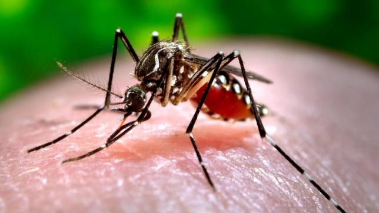
'Stop Dengue' mobile app launched With the aim of raising public awareness in preventing dengue, mobile application developer BDYOUTH launched a mobile application (app) for android phones. In coordination with five ministries and departments of the government, and four other agencies, e-Commerce Association of Bangladesh (eCab) helped to launch the app on Saturday. BDYOUTH described it as a community involvement app to help the authorities identify mosquito breeding spots. BDYOUTH said: "Stop Dengue is such a kind of mobile app where a user can capture a photo of mosquito breeding place, and submit. “This app captures the picture with exact location. Through this mobile app, any community from any place of the country can draw the attention of local authorities, and city corporations to identify the Aedes breeding places from that map, and take proper steps to destroy them, which is otherwise not possible." Our correspondents Aminul Islam Babu, DMCH and Md Wali Newaz, Faridpur contributed to this report
#2. Fire strikes Old Dhaka again: 67 killed in Chawkbazar inferno
Disaster Management and Relief Ministry opens emergency helplines for families of victims
The devastating fire Wednesday night that completely gutted several multiple-storey buildings at Old Dhaka’s Chawkbazar has left at least 67 people dead and scores injured — many with severe burns. As the injured received treatment at Dhaka Medical College Hospital (DMCH) and other hospitals on Thursday, the authorities ended the rescue efforts for victims and possible survivors at 12:45pm. Reminding Old Dhaka residents as well as the nation of the June 2010 fire tragedy at Nimtoli that killed 124 people, the Chawkbazar incident has become the second-worst such disaster in Bangladesh’s history.Although the origin of the inferno is still sketchy, this latest fire incident undoubtedly left numerous Old Dhaka families reeling from the terror and hurt from the loss of their loved ones. After the fire broke out at Nanda Kumar Lane in Chawkbazar’s Churihatta area around 10:35pm Wednesday, a total of 39 fire-fighting units from 13 stations and locals fought the flames throughout the night and managed to douse them after 12 hours of effort.They were also joined by two Bangladesh Air Force choppers in the morning as Haji Wahed Mansion — the building which had caught fire first — was still burning. According to Fire Service and Civil Defence officials, the fire spread to several adjacent buildings in minutes as they, apart from shops, housed warehouses of plastic materials, chemical compounds, and perfume and body spray — all of which are highly flammable materials and made it difficult for the fire-fighters to extinguish the flames quickly.President Md Abdul Hamid, Prime Minister Sheikh Hasina and Speaker Shirin Sharmin Chaudhury in separate messages expressed grief and mourned the loss of 67 lives in the fire, as condolences from people of all walks of life for the victims of the catastrophe poured in on social media.
Dhaka Divisional Commissioner KM Ali Azam told reporters on Thursday night that 45 of the identified bodies were so far handed over to their families. The process will continue on Friday morning, he added. The deputy commissioner’s office also revealed that among the 22 unidentified bodies, four were at the DMCH morgue, five were sent to Mitford Hospital’s morgue, three to Kurmitola General Hospital’s morgue, five each to Shaheed Suhrawardy Medical College and Hospital and the National Institute of Cardiovascular Diseases.
#3. Anti-aging effect of a healthy lifestyle
According to recent studies, adopting a healthy lifestyle, i.e., eating well, exercising, managing stress, and not smoking or drinking too much alcohol, has beneficial effects on the aging of our cells. One of the well-documented phenomena that occur during cellular aging is the degradation of telomeres, unique structures found at the ends of each of our chromosomes; however, a healthy lifestyle can slow down this process
Telomeres and aging Telomeres are repetitive DNA structures, shaped like a “hairpin”, found at both ends of chromosomes and that ensure the integrity of the genome during cell division. At each division, the telomeres shorten until they become too short to fulfill their protective function: the cell can no longer divide and enters senescence, then dies. Telomere shortening is countered by the action of telomerase, an enzyme that lengthens telomeres during each DNA replication. Telomere shortening in peripheral blood mononuclear cells (lymphocytes and monocytes) is associated with aging and aging-related diseases such as cancer, stroke, dementia, cardiovascular disease, obesity, osteoporosis and type 2 diabetes. Leukocyte telomere length is significantly, albeit weakly, associated with mortality, but cannot predict survival as well as other variables (age, mobility, cognition, smoking, daily life activities).
Physical activity
Physical training improves many aspects of human health, including exercise capacity, blood pressure regulation, insulin sensitivity, lipid profile, reduction of abdominal fat and inflammation. These beneficial effects contribute to increased endothelial function, delay the progression of atherosclerotic lesions, and improve collateralization of blood vessels in people with type 2 diabetes, coronary artery disease and heart failure. The underlying mechanisms are known in part, but details at the molecular level are less well known and are the subject of much research. The process of cellular aging can be slowed down by sustained exercise. A study published in 2009 showed that sustained physical training in young and middle-aged athletes was associated with higher telomerase activity, increased expression of telomere-stabilizing proteins, and longer telomeres, compared to sedentary people. The same research group recently conducted a randomized controlled trial to demonstrate that exercise is the cause of increased telomerase activity and telomere length. The results of the study were published in 2018 in the European Heart Journal. The researchers recruited 124 middle-aged men and women (≈50 years) who were in good health, but did not exercise. During the six-month study, participants were randomly divided into four groups: a control group and three groups that did different types of exercise 3 times a week; one group did endurance training (walking/running, 45 min/day); another group exercised at high intensity intervals (4 min at high intensity/4 min rest, repeated 4 times); and the third group did resistance exercises (various weight machines). Blood samples were taken before, during, and at the end of the study to measure telomere length and telomerase activity in leukocytes (white blood cells). At the end of the study, those who exercised, regardless of the type, had better cardiorespiratory capacity than at the beginning of the study. Telomerase activity was 2–3 times higher in the leukocytes of those who did endurance or interval exercises, compared to the control group. However, this effect was not observed in people who did resistance exercises (weight training). Similarly, telomere length was greater in those who did endurance or interval exercises, but not in those who did resistance exercise. These results suggest that endurance exercises such as running, brisk walking or swimming are more effective than resistance exercises to keep longer telomeres and delay cellular aging. It should not be concluded, however, that resistance exercises are useless for healthy aging. Resistance exercises increase overall fitness, which is one of the most important indicators of longevity. The researchers suggest further study on the effects of various combinations of endurance and resistance exercises on cellular aging. The lead author concludes that the central message of his study is that it is never too late to start exercising and that it will have beneficial effects on aging.
Proteomic approach to the effects of exercise
Researchers have studied the effects of endurance exercise on the expression of 1,129 proteins in the blood plasma (plasma proteome), classified into 10 modules or patterns according to their level of interconnection. Exercise altered protein expression of four modules in young men, and five modules in older men. Modules affected by the exercise included proteins related to signalling pathways involved in wound healing, apoptosis (cell death) regulation, glucose, insulin and cellular stress signalling, as well as immune and inflammatory responses. In addition, several exercise-affected modules could be correlated with physiological and clinical indicators of a healthy life, including diastolic blood pressure, insulin resistance, maximal aerobic capacity, and vascular endothelial function.
Diet
According to a systematic review of studies published on the subject, five studies indicate that fruit and vegetable consumption is associated with longer telomeres, while eight other studies have not identified a significant association. For foods other than fruits and vegetables, including grains and meats, the data are inconclusive as a whole. Some studies, however, indicate unfavourable associations between certain food groups and the length of telomeres: grains, processed meats, sugary drinks, fats and oils. With regard to eating habits, only the Mediterranean diet has been associated with longer telomeres, but not in all the studies published to date. Future larger-scale observational studies and more focused randomized controlled trials could help to better identify which elements of the diet are beneficial for telomere maintenance and help slow the process of cellular aging.
Effect of stress
Several cross-sectional studies have reported associations between telomere stability and stress exposure (review articles here, here and here). The association lasts throughout life and has been observed in children whose mothers had been under significant stress. It seems that even prenatal stress indirectly experienced by the fœtus is associated with shorter telomeres after birth. Prolonged or repeated exposure to stress is associated with a shortening of telomeres and the development of age-related diseases such as type 2 diabetes, heart disease, dementia and osteoarthritis. According to some studies, people with bipolar disorder, schizophrenia, major depression and post-traumatic stress disorder have shorter telomeres. Stress and mental illnesses therefore have direct effects on the aging of our cells, with consequences for health over the course of life.
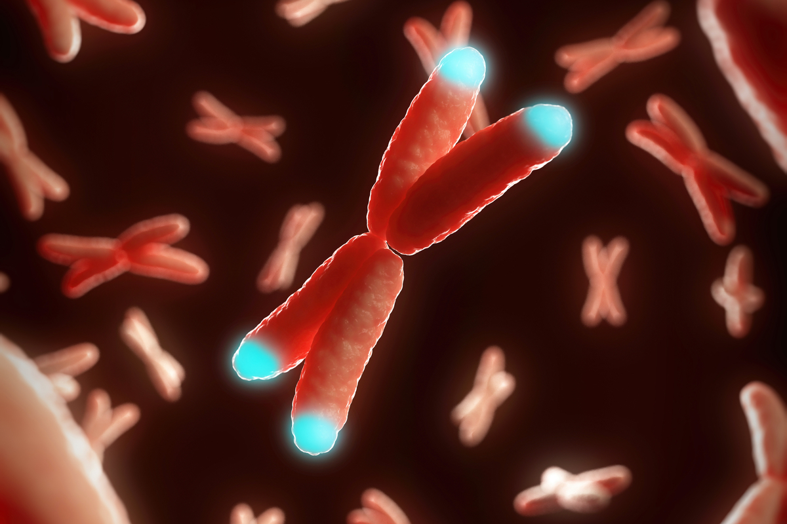
Global lifestyle
For men diagnosed with low-grade prostate cancer, adopting a completely different and healthy lifestyle (plant-based, low-fat diet, exercise, stress management, social support) has been associated with a 10% increase in telomere length in their lymphocytes and monocytes, five years after the start of the intervention. Participants in the control group (active surveillance only), on the contrary, saw the average length of their telomeres decrease slightly (-3%). This intervention study included only a small group of people (n = 30), so larger-scale randomized controlled trials are needed to confirm these findings. There is growing evidence that physical activity has a significant influence on health and quality of life as people age. For example, older people who exercise regularly are often in better shape, they are more muscular, and they are less likely to develop chronic illnesses or physical disabilities than sedentary seniors. Adopting a lifestyle that combines healthy eating, regular exercise and stress management is certainly one of the best things one can do to prevent or fight age-related diseases.
#4. Stroke: What you need to know
What is a stroke?
A stroke is a medical emergency. It is similar to a heart attack for the brain. It occurs when the flow of blood to the brain is interrupted, resulting in oxygen starvation to the brain cells which can no longer perform their task whether it is memory, vision or muscle control. The severity of the stroke depends on where the stroke occurs in the brain and how much damage there is. A small stroke can cause a transient and mild weakness of the right hand like in this example where a small area of blurring between the cortex and the white matter on the left side of his brain as displayed on this non-enhanced CT image.
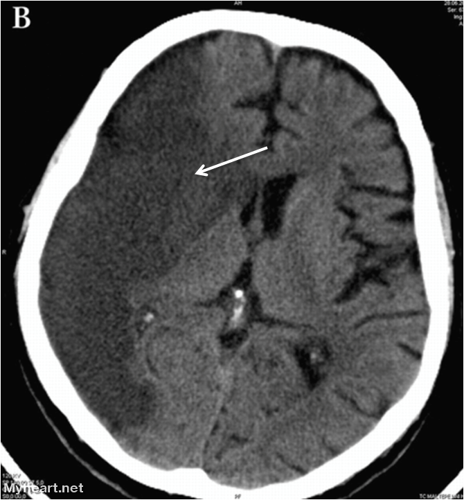
How do you recognize a stroke?
The most common manifestations of a stroke are: Facial drooping Arm weakness Slurred speech Sudden numbness or weakness of face, arm or leg, especially on one side of the body Sudden confusion, trouble speaking or understanding speech Trouble seeing in one or both eyes Trouble walking, loss of balance or dizziness Sudden severe headache, vomiting and altered consciousness are more common in hemorrhagic or large strokes.
Two types of strokes:
1.Ischemic stroke: Ischemic stroke can be thrombotic when a blood clot forms inside the artery of the brain and cuts off the blood supply. This type of stroke occurs mostly in patients with high cholesterol and atherosclerosis and implicates large arteries. Patients with hypertension also develop thrombotic strokes but frequently in smaller arteries resulting in “lacunar” infarcts and involved a deeper part of the brain where all the nerve fibers join (internal capsule) before reaching the brainstem and spine. Ischemic strokes can also be embolic, meaning a blood clot or a cholesterol plaque from somewhere in the body (carotid artery in the neck, aorta or the heart) travels to the brain and blocks the artery in the brain. Ischemic strokes account for the majority of strokes. 2.Hemorrhagic strokes: Hemorrhagic strokes account for only 15% of strokes but they are deadly and account for over 40% of mortality. It occurs when a brain aneurysm ruptures or a weak blood vessel leaks with blood spilling into the brain. This results in swelling of the brain, increased pressure inside the skull and damage of the brain cells. Below are CT images of a patient with a lobar hemorrhage.
How do you treat a stroke?
A stroke is an emergency and you should call 911! “Time is brain” and an earlier treatment will minimize the effect of the stroke and improve outcome. Approximately 2 million neurons or brain cells are lost each minute when a major artery such as the middle cerebral artery is occluded. There are four important questions to know when treating a stroke patient: 1. Is there an intracranial bleed (or something mimicking a stroke)? 2. Is there a large blood vessel occluded? 3. Is there a part of the brain irreversibly injured? 4. Is there a part of the brain that can be salvaged but at risk (the penumbra)? It is important that when the present to the Emergency Room, “Code Stroke” is initiated and a CT of the head is performed within 25 minutes of arrival. After rapid interpretation of the brain scan and if no contraindations, intravenous thrombolytic tPA is started within 3-4.5 hours of symptoms onset. Hospitals strive to start this lifesaving blood thinner within 60 minutes of presentation.
At BMC Princeton, Dr William Gallmann has implemented a stroke imaging protocol:
For tPA Eligible patients: 1. non contrast CT brain 2. if no hemorrhage and tPA eligible, tPA is administered in the radiology department 3. proceed with CT Perfusion, CTA head/neck while tPA is infusing For tPA Non Eligible (bleed or tumor/abcess) 1. non contrast CT brain 2. proceed with CT perfusion,CTA head and neck unless hemorrhage
Early ischemic changes by CT can appear as blurring an indistinctness of gray-white matter like in the first picture shown earlier. It can be seen in 50-70% of cases within the first 3 hrs. Occasionally a wedge shaped hypodense area in the brain can be seen as well. Growing evidence supports a physiologic rather than a purely time based approach where patients with viable brain tissue may benefit from reperfusion, even in patients that present after 6 hrs. Wake-up strokes, strokes with unclear onset time and witnessed late presenting strokes represent almost 50% of patients presenting in the Emergency Room. This is the reason that CT perfusion is so important and can differentiate the area of the brain that is permanently damaged and the area that is still viable but ischemic, known as the penumbra.
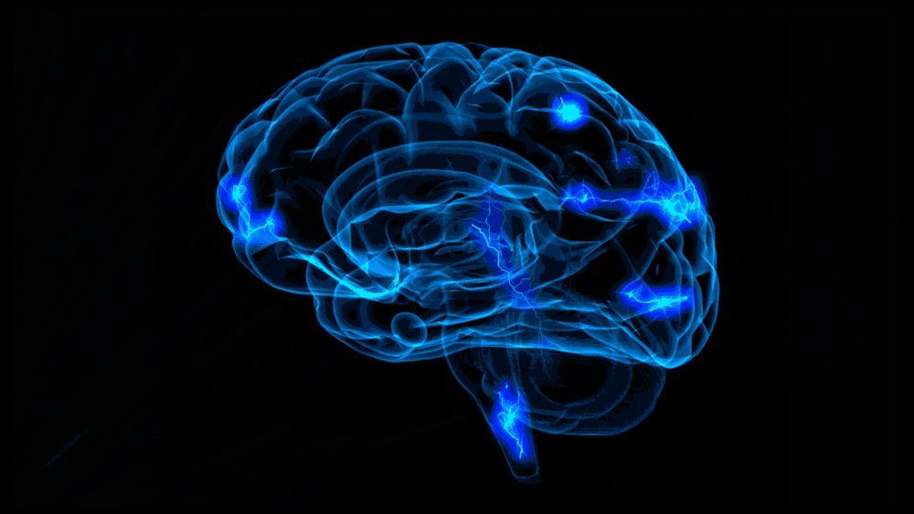
At St Vincent’s hospital like at Princeton, a perfusion CT scan is obtained when patients present with a stroke. Perfusion CT imaging is a rapid dynamic imaging of the brain following usually approximately 40 cc of radio-iodine contrast. The axial scans are repeated approximately every 2 sec for 68 sec. It allows for quantification of different parameters such as cerebral blood flow and volume, transit time of the contrast and time to peak. From this data acquisition, we can derive the infarct core or permanently damaged area of the brain, the ischemic zone or penumbra and the area surrounding it that is not receiving enough blood flow. The latter area is composed of brain cells that can be salvaged. The Rapid software was developed at Stanford and allows for quicker, more quantifiable post processing maps and delineation of penumbra. The following patient is a 55 yo male presenting with left sided weakness and slurred speech beginning 6 hrs prior to admission. The first CT image shows blurring between the cortex and the white matter in the distribution of the MCA. The CTA of the head shows an occlusion of the middle cerebral artery. 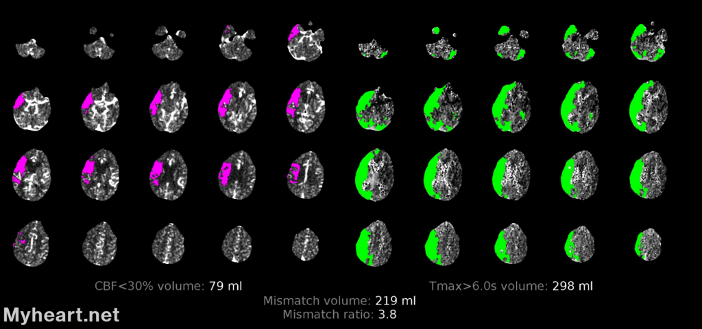
The Rapid Mismatch profile on the perfusion image shows the infarct core (magenta) and the surrounding penumbra or ischemic zone in green. Unfortunately the core infarct was too large to receive a mechanical thrombectomy.
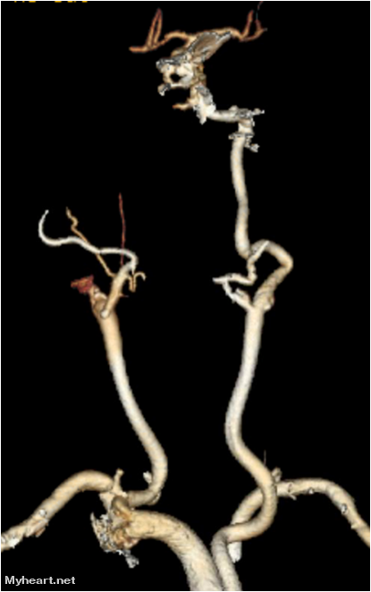
CTA or CT Angiography can provide useful and timely information for detection of the thrombus and degree of stenosis. The picture below demonstrates an occlusion of the right internal carotid artery. In specialized centers, thrombectomy can be performed to dissolve or remove the clot obstructing the artery in the brain. This procedure is associated with improved clinical outcomes. In the DAWN study, for every 100 patients treated with endovascular therapy, 49 had less disabled outcome and 36 were rendered functionally independent. A critical mismatch on the perfusion images predicts the treatment effect independent of time to presentation. The thrombectomy window has recently been increased from 6hrs to 16-24 hrs in certain patients. We would like to thank Dr William Gallmann for his assistance with reviewing this article and providing the CT scan images. We also acknowledge the help of Jay Robertson at Myheart.net for his invaluable technical expertise.
#5. MRI Scans in Patients with Pacemaker Defibrillators
Cardiac Magnetic Resonance Imaging (MRI) is a completely noninvasive test that uses a magnetic field and radio frequency waves to create detailed pictures of the heart and blood vessels. It depicts the heart wall and valves structure and display its function. It provides information on the regional and global heart function, valves and their function as well as other structures around the heart such as the pericardium.
Contrary to X-rays, Cardiac MRI does not use ionizing radiation so it can be repeatedly use to evaluate changes in the heart structure over time without an increased risk of cancer. Cardiac MRI can also show patterns of blood flow through the heart.
MRI scans in patients with Pacemakers Defibrillators?
MRI is a safe and painless test for most people. Patients with any type of metal devices inside their body need to be screened before having an MRI since many types of metal are dangerous and potentially lethal in an MRI magnetic field. In general, patients with inner ear implants, neuromuscular stimulation (pain management), implanted drug infusion pumps, IUD’s, brain aneurysm clips that are not approved for MRI, some dental implants or metal fragments, particularly in the eye, should avoid MRI. Certain types of metal or metallic devices however are considered MRI safe or MRI conditional, and can be placed in an MRI magnetic field with minimal to no risk. Many types of modern pacemakers fall into the category of MR conditional and patients with these types of devices can undergo an MRI exam under the appropriate medical supervision. The first MR conditional implantable device was approved by the FDA in 2011. The 2017 Heart Rhythm Society guidelines provide the most up to date recommendation for performance of MRI in cardiac implantable electronic devices. They make a strong recommendation for MRI with MR conditional systems only in the context of a standardized institutional protocol.
Before the MRI Procedure:
Exclude patients with Older devices (pacemaker 1998 ICD 2000) Recently implanted devices unless medically necessary record device parameters reprogram pacer /ICD to baseline VVI deactivate tachyarrhythmia therapy or other functions During MRI: monitor blood pressure, ECG, O2 saturation and symptoms After MRI recheck device parameters restore original programming follow up interrogation in 3-6 months MRI in pacemaker dependent patients is allowed with the provision of temporary pacing facility and a permanent implantable device trained physician in place. Original concerns about mechanical displacement of the device due to the powerful magnetic field have been unjustified because the Ferro-magnetic content of these devices are extremely low, particularly in the MR compatible systems. These newer devices and their leads do not undergo any significant MRI induced heating and therefore do not pose an increased risk of MRI induced thermal injury. Device reprogramming including “power-on” reset can occur in MRI systems because the strong magnetic field can activate the reed switch on the device. For this reason, a qualified pacemaker/ICD technician and a clinical nurse is always present throughout the study, making the appropriate parameter changes before and after the examination. The location of the pacemaker/AICD lead in the chest wall can affect the image quality of a cardiac MRI study with left sided devices creating more artifacts leading to reduced diagnostic accuracy. For cardiac MRI imaging, gradient echo sequences display fewer artifacts. Below are 2 examples of patients with ICDs and cardiac MRI imaging performed with the help of Dr. Ricardo Bracer in Radiology. Our first patient has chronic systolic heart failure caused by a large inferior myocardial infarction. First the AICD (Automated implantable cardioverter defibrillator) was interrogated and placed on stand-by mode by a Medtronic technician. The patient was monitored during the exam. Cardiac MRI was performed with and without contrast using cardiac gating and breath hold technique. Cine steady state free precession sequences were used to evaluate LV function. Following the administration of 11 cc of Gadavist, immediate post contrast images were obtained to evaluate resting perfusion. A specialized T1 mapping Look-Locker sequence is then obtained followed by post contrast delayed sequences to assess for late Gadolinium enhancement (LGE) and infarct size. Following completion of the exam, the AICD was interrogated and reprogrammed back to normal mode. The patient tolerated the procedure well without complication. The images below demonstrate marked thinning of the inferior wall with diffuse and uniform LGE compatible with a prior infarction and resultant scarring.
Red asterisk: Placement of the pacemaker ICD
Green arrow: Shows the large inferior scar Cardiac MRI gives accurate information about the pumping function of the heart. It calculates Left Ventricular chamber dimensions in systole, when the heart muscle contracts and in diastole, when the heart muscle relaxes. The resulting ejection fraction is calculated and can be used overtime to follow the progression of heart disease and the prognosis of the patient. In our patient there is segmental akinesis of the inferior wall with LV dilatation and global hypokinesis. The ejection fraction measured 39%.
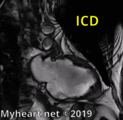
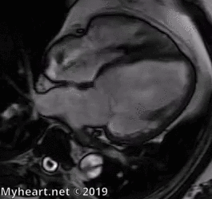
The 4 chamber view displays the heart function and the ICD lead can be seen in the right ventricle.
Our second patient does not have coronary disease but has severe hypertension and diabetes. Her cardiac MRI shows LV dilatation with global hypokinesis. There is uniform myocardial wall thinning without segmental areas of hypertrophy. There are no areas of LGE or myocardial scarring which is consistent with non-ischemic cardiomyopathy. The ejection fraction was calculated at 28%.
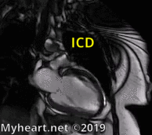
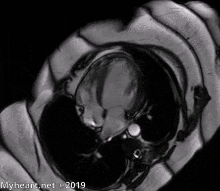
MRI scans in patients with Pacemaker Defibrillators: Who needs a cardiac MRI?
Patients can be referred for Cardiac MRI for several reasons. It can be due to symptoms concerning for heart disease such as shortness of breath, chest pain, palpitations, dizziness or syncope. It may also be to monitor existing heart condition such as valve problem or heart failure.
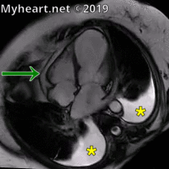
After a heart attack
After a heart attack, cardiac MRI can measure the damage to the heart and evaluate the effect of therapy. It can also evaluate the effect of the heart attack on the heart function and how the patient will progress over time. Patients with palpitations and arrhythmias such as PVC’s or Ventricular tachycardia can undergo a cardiac MRI to detect a scar or area of damage of the heart muscle and guide therapies for ablation. MRI scan in patients with Pacemaker Defibrillator: heart size. Cardiac MRI is also used to provide information regarding the heart size. MRI allows for accurate measurement of the dimensions of the different chambers of the heart as well as the heart walls. We can derive the weight of the heart by calculation of LV mass. Serial imaging studies can depict remodeling of the heart after a heart attack. Some patients can develop an enlargement of the heart that can lead to congestive heart failure. The patient below underwent MRI study few weeks after a large anterior myocardial infarction. One year later, another MRI study demonstrated adverse remodeling and enlargement of the LV dimensions despite optimal medical therapy.
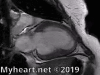
MRI scans in patients with Pacemaker Defibrillators: patients with chest pain.
Chest pain can be caused by several different conditions which can be assessed by cardiac MRI. If blockage of a coronary artery is suspected, cardiac MRI can show abnormalities in the wall of the heart supplied by those arteries. The wall motion abnormalities can be depicted accurately and with high resolution imaging. The effect of medical therapies can be evaluated before and after treatment such as in the case of stem cell treatment after a Non-STEMI heart attack.
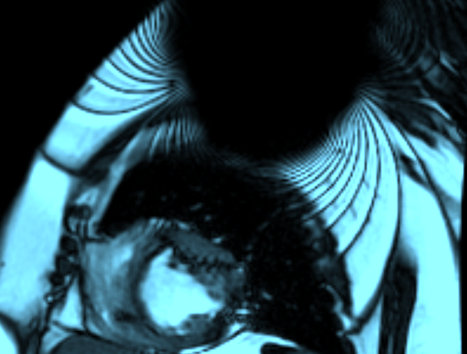
A negative cardiac MRI perfusion scan indicates a very good outcome with a cardiac event rate of less than 1% over the next 3 years following the exam. Other causes of chest pain include pericarditis. The inflammation around the heart may lead to accumulation of fluid around the heart.Chest pain radiating to the back can evoke the diagnosis of aortic dissection which can be detected by cardiac MRI. First, a CT angiogram depicts an image of a dissection involving the descending aorta.
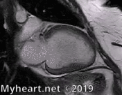
It is followed by an MRI demonstrating the tear in the aorta on the same patient.Cardiac MRI shows structure and function of the 4 valves of the heart: the aortic valve, the mitral valve, the tricuspid valve and the pulmonic valve. Cardiac MRI depicts leakages of the valves and can be used to monitor the size and function of the heart overtime and guide intervention such as valve replacement or mitral clip. Below is a patient with mild cardiomyopathy and mild to a moderate mitral insufficiency followed by a patient showing moderate aortic insufficiency with a jet projecting on to the mitral valve.
#6. Why do we associate women with stress cardiomyopathy or Takotsubo?
Points to Remember:
– Takotsubo was initially regarded as benign but can be associated with severe clinical complications including death
– Most common symptoms include chest pain and shortness of breath similar to a heart attack
– 5 – 6% of female present with suspected STEMI
– Women are frequently affected by emotional stress such as death of a loved one
– The most common type is apical ballooning of the left ventricle
– More frequent during summer months
Stress can be positive and can trigger hormonal changes within the body that can help with performing a task. This so called “fight or flight” response evokes a survival mechanism enabling people to react quickly to a stressful or sometimes life-threatening situation. When stress is experienced over a repeated and a prolonged period of time, it can have physical and psychological repercussions. Chronic stress contributes to high blood pressure, atherosclerosis and formation of dangerous plaques in the coronary arteries that causes heart attacks and changes in the brain that can produce anxiety and depression. Experts feel that women are more susceptible to stress and are more prone to develop a stress cardiomyopathy or Takotsubo. Physiological and hormonal changes associated with menstruation, pregnancy and menopause can alter the vulnerability to stress and depression. In addition, societal pressures for women to adopt the many roles of wife, mother, caretaker, administrator of the household on top of holding a full time job and become leaders in their field has left very little time for women to spend taking care of their own physical and emotional needs. Stress can activate the brain with a spillover of hormones such as catecholamines that can cause a direct toxic effect on the heart muscle and/or vascular dysfunction at the microvascular level. Women and stress cardiomyopathy or Takotsubo. Our first patient is a 57 year old woman smoker with HTN, diabetes mellitus, hyperlipidemia, anxiety and bipolar depression who presented in the Emergency room with chest pain and fatigue. The patient had been dealing with financial difficulties all year. The symptoms of chest pain started 1 week prior to presentation. On the morning of admission, she developed severe, non-radiating chest pain associated with profuse sweating. The pain was located in the center of her chest and was partially relieved with nitroglycerin. Her ECG showed nonspecific changes and troponin was slightly abnormal at 0.79. The patient was admitted to the hospital, and because of the persistence of the pain, she was taken to the cath lab. Cardiac catherization revealed the classic finding of stress cardiomyopathy or Takotsubo and normal coronary arteries.
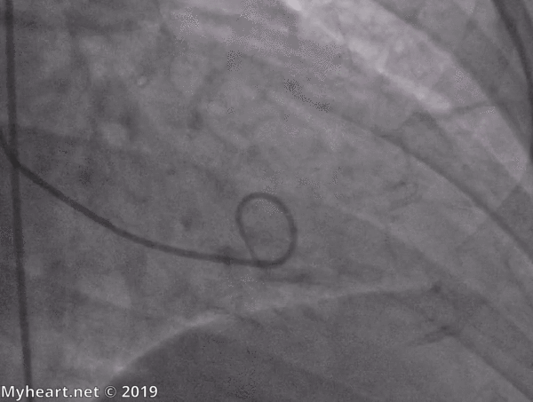
Twenty four hours later, the patient was experiencing mild and pleuretic chest pain. The echocardiogram showed left ventricular hypertrophy and complete resolution of the wall motion.
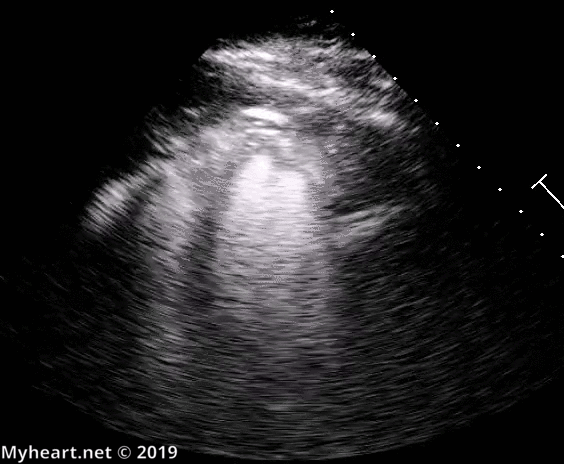
She was treated with angiotensin receptor and beta blockers. The ECG displayed new T-wave inversion and an increase in the QT interval at 508 msec.
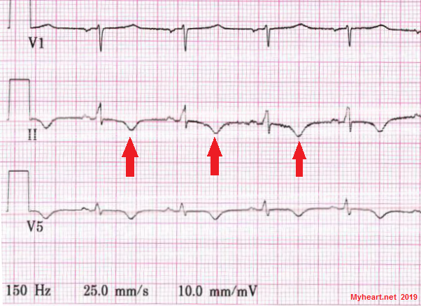
This complicated the anti-depressive medical treatment as her medication could further increased the QT and cause serious and lethal arrhythmias. The Venlafaxine (Effexor) was reduced and a follow up with the psychiatrist was made to change her treatment. Her heart function had totally returned to normal. A follow up MRI cardiac imaging one week later, revealed left ventricular hypertrophy with apical variant, normal wall motion, ejection fraction of 86% and absence of Late Gadolinium Enhancement (LGE) or fibrosis.
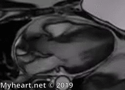
Women and stress cardiomyopathy or Takotsubo: clinical features.
Stress cardiomyopathy or Takotsubo is a clinical syndrome presenting as acute chest pain, mimicking a heart attack, and characterized by transient left ventricular dysfunction (systolic or diastolic) often related to an emotional or physical stress. Stress cardiomyopathy or Takotsubo represents approximately 1-2 % of patients presenting as suspected coronary syndrome. Cohort studies suggest an incidence of 15-30 cases per 100,000 per year in the US alone. Registries revealed at least 90% are post-menopausal women. Emotional triggers can consist of financial stress or death of a loved one. Physical stresses include acute critical illness, surgery, asthma or COPD exacerbation, stroke or seizure. Marijuana or cannabis is a recognized risk factor and increases the risk of cardiac arrest. The majority of stress cardiomyopathy or Takotsubo patients present with chest pain (75%), shortness of breath or dizziness (50%) or passing out (5-10%). Approximately 40% of patients can present with ECG revealing the presence of ST elevation similar to STEMI heart attacks. Most patients present with ischemic ECG changes with deep T wave inversion and prolonged QT interval 24-48 hrs after the onset of symptoms similar to our first patient. Patients with QT prolongation are at increased risk for Ventricular tachycardia and Ventricular fibrillation and should be monitored for 48-72 hrs. Medications such as antidepressive drugs can prolong the QT interval and should be modified or replaced when possible. Ninety percent of the Takotsubo patients have a mild elevation of troponin.
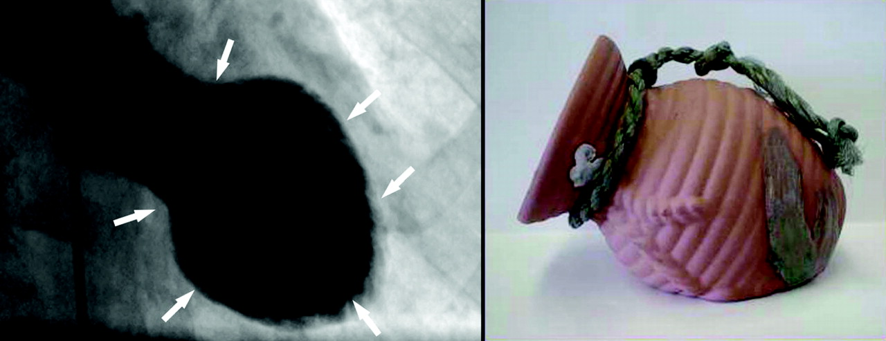
Women and stress cardiomyopathy or Takotsubo: clinical course and treatment. The distinctive feature of ballooning of the heart extends beyond the region supplied by the coronary artery. Coronary angiography is performed to rule out significant coronary disease. In most patients with stress cardiomyopathy or Takotsubo, the coronaries are normal or have minimal disease and the LV gram reveals a ballooning of the tip of the heart while the base of the heart works overtime (seen in over 80% of patients). Most patients recover within few weeks to few months. Our first patient recovered her LV function within 24 hrs. Our second patient is a 75 year old woman wedding planner, who experienced a lot of stress when her daughter divorced. She presented to the Emergency room with nausea, vomiting and left sided chest pain, and troponin elevated at 6. Cardiac cath revealed minimal coronary disease and the classic finding on the LV gram with EF at 25%.
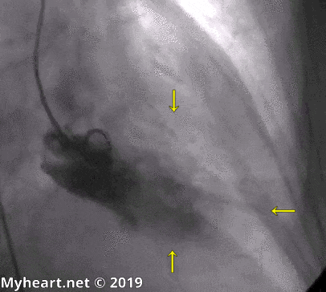
She was treated initially with beta blockers and ace inhibitors. However, because of hypotension, she was continued on ace inhibitors only. One month later, the echocardiogram revealed complete normalization of the LV function. While most patients recover LV function within 3-6 months, some patients suffer from systolic heart failure during the acute phase. The in-hospital mortality remains high at 5% and is seen primarily in elderly, patients presenting with very low EF less then 20% high troponin elevation, involvement of the right ventricle and patients experiencing physical stress such as acute illness. Patients with prolonged QT interval are at risk of developing significant arrhythmias such as Torsade de Pointe and Ventricular Fibrillation. Treatment of heart failure is based primarily on relief of congestion and hemodynamic support. Low dose beta blockers and/or ace inhibitors are usually prescribed before discharge and continued if tolerated. Although stress cardiomyopathy or Takotsubo is reversible, the syndrome can recur at a rate of 2-4% per year. A multidisciplinary approach is recommended to address psychological or psychiatric issues that persists and can contribute to recurrence and outcomes. If you would like to learn more about heart disease in women or Takotsubo, you can click on Myheart.net articles: Why women’s heart are different, or broken heart syndrome. The American college of Cardiology discussed the Key Points to remember in Takotsubo syndrome in their latest review in 2018.